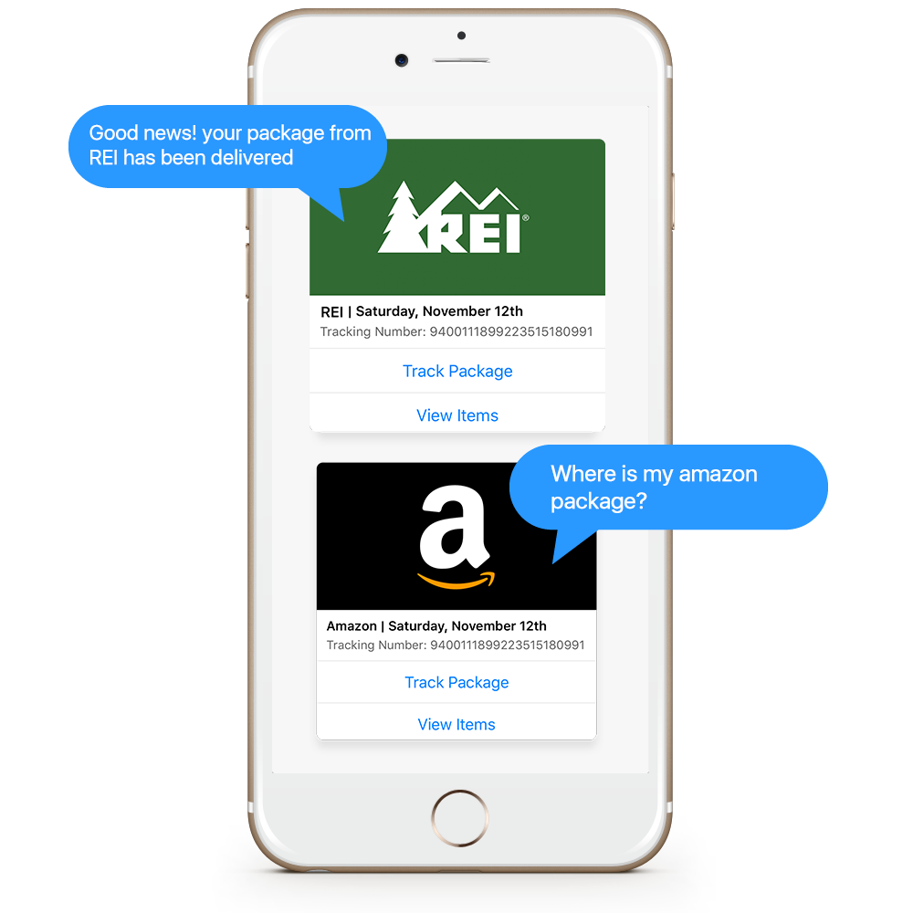

"A nimble messenger who tracks your deliveries for you."
Want to know where your shipments are?
Ask Courier
Tracking your packages just got easier. Courier intelligently scans your email for tracking numbers to save you from the hassle of searching your inbox. When you want to know more about your upcoming deliveries, all you have to do is ask.

What packages are arriving tomorrow?
Courier is your nimble package tracker offering features to:
Alert you when a package is delivered
Share updates about where your package is in transit
Find receipts from previous packages delivered
Keep up with Courier
Now Available on Facebook Messenger
courier is a bad ass EasilyDo Experiment Want to be the first to know more about Courier updates? Join our Beta group for early access to future developments.